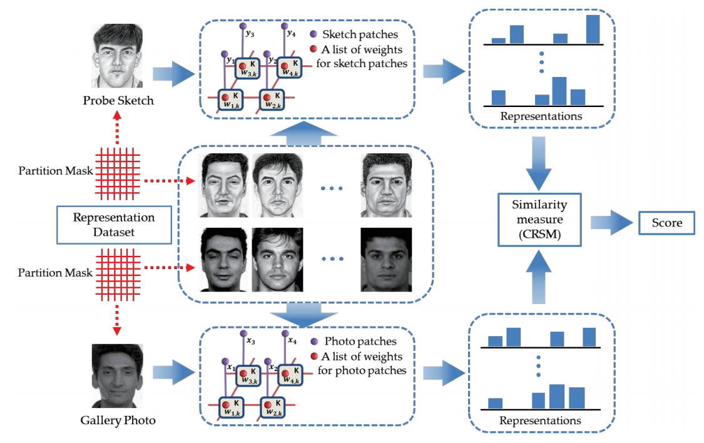
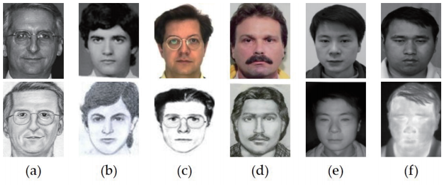

Graphical Representation for Heterogeneous
Face Recognition
Xidian University

Abstract
Heterogeneous face recognition (HFR) refers to matching face images acquired from different sources (i.e., different sensors or different wavelengths) for identification. HFR plays an important role in both biometrics research and industry. In spite of promising progresses achieved in recent years, HFR is still a challenging problem due to the difficulty to represent two heterogeneous images in a homogeneous manner. Existing HFR methods either represent an image ignoring the spatial information, or rely on a transformation procedure which complicates the recognition task. Considering these problems, we propose a novel graphical representation based HFR method (G-HFR) in this paper. Markov networks are employed to represent heterogeneous image patches separately, which takes the spatial compatibility between neighboring image patches into consideration. A coupled representation similarity metric (CRSM) is designed to measure the similarity between obtained graphical representations. Extensive experiments conducted on multiple HFR scenarios (viewed sketch, forensic sketch, near infrared image, and thermal infrared image) show that the proposed method outperforms state-of-the-art methods.
Contribution Highlights
- We employ Markov networks to obtain graphical representations for representing heterogeneous face images, which firstly takes spatial information into consideration
- A coupled representation similarity metric is developed for matching, which considers the spatial structure between heterogeneous face image patches
- Leading accuracies are achieved on multiple HFR scenarios which illustrates the effectiveness of the proposed method
Databases

- (a) the CUHK Face Sketch FERET Database (CUFSF) [Link];
- (b) the IIIT-Delhi Semi-forensic Sketch Database [Link];
- (c) the PRIP Viewed Softward-Generated Composite Dataset (PRIP-VSGC) [Link];
- (d) our collected forensic sketch database, which originates from a collection of images from the forensic sketch artist Lois Gibson[1], Karen Taylor[2], and other Internet sources;
- (e) the CASIA NIR-VIS 2.0 Database [Link];
- (f) the Natural Visible and Infrared facial Expression Database (USTC-NVIE) [Link];
Citation
-
C. Peng, X. Gao, N. Wang, and J. Li. Graphical Representation for Heterogeneous Face Recognition. IEEE Transactions on Pattern Analysis and Machine Intelligence, vol. 39, no. 2, pp. 301- 312, 2017. [PDF] [PDF on arXiv]
References
[1] L. Gibson, Forensic Art Essentials: A Manual for Law Enforcement Artists. Waltham, MA: Academic Press, 2010.
[2] K. Taylor, Forensic Art and Illustration. Boca Raton, FL: CRC Press, 2000.